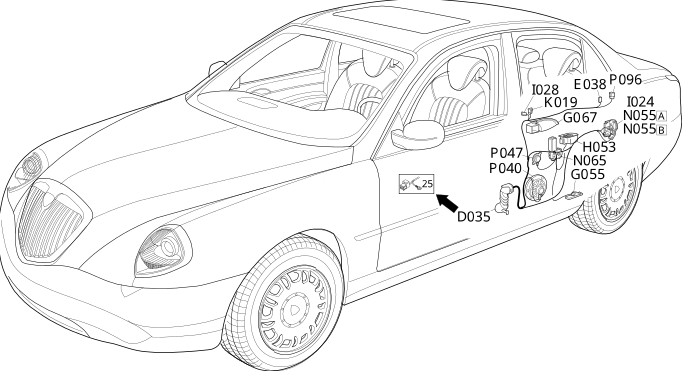

34 left rear door
- Path
- Electrical equipment > Wiring > 34 left rear door
- Kind
- wiring harness
- Applies to
- all engines; all production periods
- Interactive page
- https://sloeber94.github.io/elrnDB-lThss/en/#/207363
Applies to: all engines; all production periods

Topics that link to this page (15)
- D035 Left rear door coupling(REAR)
- E038 Unit signalling driver's rear door locking/unlocking(LEFT REAR DOOR)
- G042 Driver's side rear ashtray light(LEFT REAR DOOR)
- G055 Left rear door light(LEFT REAR DOOR)
- G067 Left rear door handle light(LEFT REAR DOOR)
- H053 Electric window switch on left rear door(LEFT REAR DOOR)
- I024 Switch on driver's rear exterior handle(LEFT REAR DOOR)
- I028 Driver's rear door locking/unlocking switch(LEFT REAR DOOR)
- K019 Anti-crush safety sensor in driver's rear door(LEFT REAR DOOR)
- N055A Left rear door lock geared motor(LEFT REAR DOOR)
- N055B Left rear door lock geared motor(LEFT REAR DOOR)
- N065 Left rear electric window motor(LEFT REAR DOOR)
- P040 Speaker in left rear door(LEFT REAR DOOR)
- P047 Left rear tweeter speaker(LEFT REAR DOOR)
- P096 RF aerial on left rear door for passive entry (NPE)(LEFT REAR DOOR)